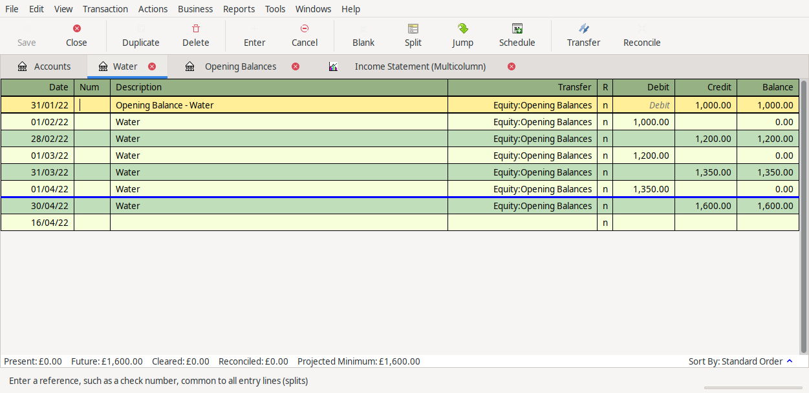
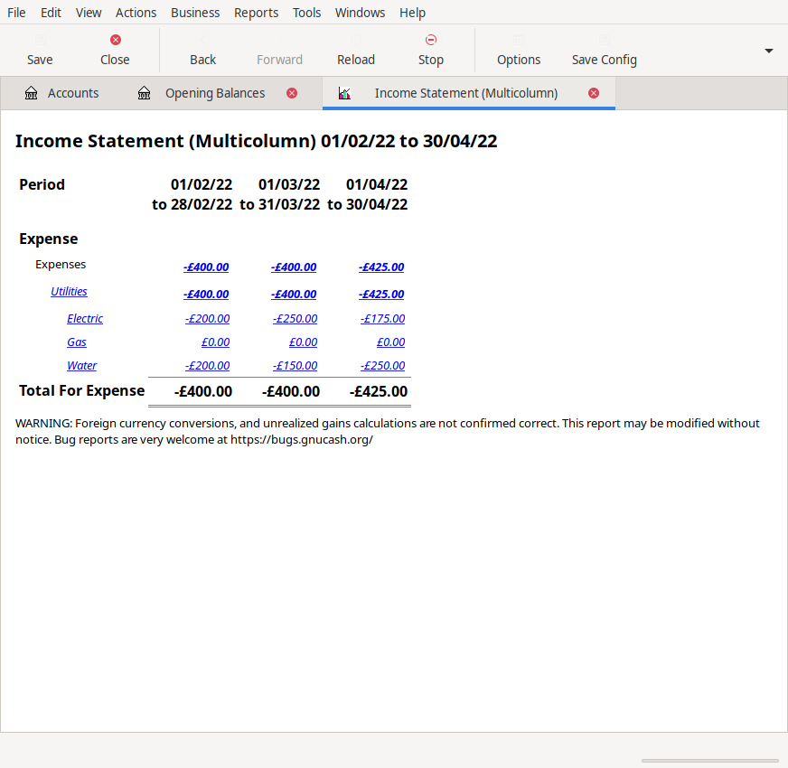

Bookkeeing for Energy Usage
On Fosstodon, someone was asking about how they could use their bookkeeping software to record their energy usage. One could use a spreadsheet, which might be a bit more meaningful, however, let's look at using the bookkeeping.
Before I continue, how I suggest to do the bookkeeping does not comply with any accounting standards, so do not attempt to incorporate it into your exisiting accounts. I would recommend maintaining a separate set of books.
Bookkeeping can be used to measure anything. So long as the thing can be measured, it can be measured using a ledger. Accounting software offers a convenient way of recording movements of data.
Energy can be thought of in terms of the actual energy used (which is what this individual wanted) or in terms of the monetary value of the usage. Under most circumstances the monetary value is what is important. Typically in the UK, the cash movement is spread over the whole year, as the actual usage is much higher over the winter months.
The bookkeeping might look like (BS = balance sheet, IS = income statement):
Cash Monthly Direct Debit:
| Action | Nominal | Description | Unit | DR | CR |
|---|---|---|---|---|---|
| CR | BS | Cash | £ | I | |
| DR | BS | Payables | £ | I |
Payables Invoice:
| Action | Nominal | Description | Unit | DR | CR |
|---|---|---|---|---|---|
| CR | BS | Payables | £ | J | |
| DR | IS | Energy Usage | £ | J |
Ideally, the invoices for the energy would match whatever your reporting period is. However, this is the monetary value, not the actual usage. To record actual usage the bookkeeping would be:
| Action | Nominal | Description | Unit | DR | CR |
|---|---|---|---|---|---|
| DR | IS | Water | m^3 | X | |
| CR | BS | Water | m^3 | -X | |
| DR | IS | Gas | m^3 | Y | |
| CR | BS | Gas | m^3 | -Y | |
| DR | IS | Elec | kWh | Z | |
| CR | BS | Elec | kWh | -Z |
Assuming a monthly reporting period, I would take a meter reading on the last day of the month, then reverse this value on the first day of the next month. This would mean that on a period by period basis, the income statement would show the flows of energy. For example, the water income statement would show:
| Date | DR | CR |
|---|---|---|
| Jan 31 | 1000 | |
| Feb 01 | -1000 | |
| Feb 29 | 1200 | |
| Mar 01 | -1200 | |
| Mar 31 | 1350 | |
| Apr 01 | -1350 | |
| Apr 30 | 1600 |
Screenshow from entries in Gnucash:

The income statement would then show the usage as:
| Period | Usage (m^3) |
|---|---|
| Feb | 200 |
| Mar | 150 |
| Apr | 250 |
Gnucash Income statement:

As long as there were different nominal codes for each utility, an income statement would show you the usage for a given period. However, this does not mean that these numbers would be comparable. Water, Gas, and Electricity are all sold in different units and are measured differently. To get a more comprehensive system, you would want to look to foreign currency accounting.
In foreign currency accounting, your functional currency is the currency which you report in and the main currency that your business uses. Balances are translated at the reporting date, flows are translated at the transaction date. Any differences due to exchange rate hit the income statement. Many difference accounting software packages have realised and unrealised gains or losses. Realised are actualy profits or losses that have a cash impact, unrealised are still potential movements.
The foreign currency solution to this would be to use the price that your energy supplier charges as the "exchange rate", and translate the balances and flows according to the new rates. Gas usage is made substantailly more difficult as it recorded in m^3, however, it is sold in kilowatt-hours (kWh). And the conversion rate changes frequently.